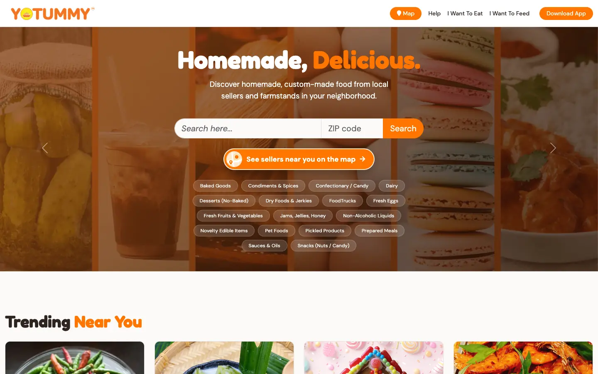
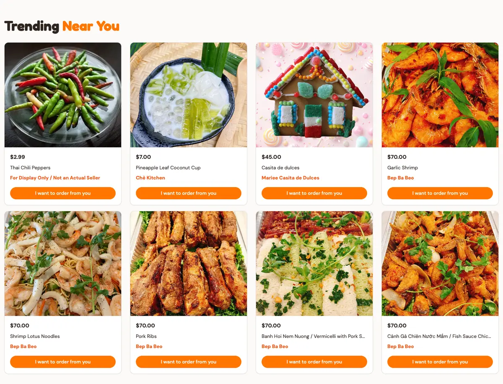
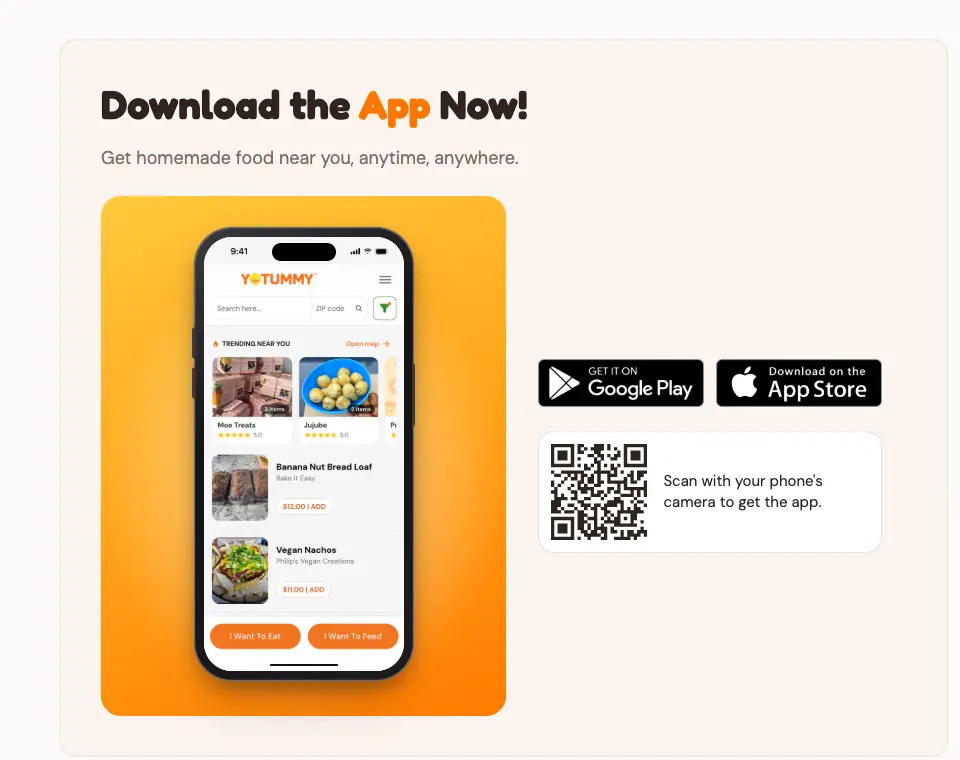
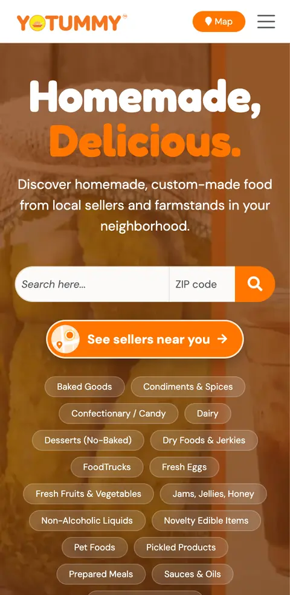

Client site and app
YoTummy
A marketplace for homemade food from local cooks, with a website, seller portal, admin panel and phone app.
- yotummy.com
- Private repo

By the numbers
- 206commits in the main app, all mine
- 3.1.1app version shipped to both stores
- 164commits on the redesign prototype
- 4apps: site, seller portal, admin, phone
What I did
- Took over an inherited codebase and became its only developer.
- Added a map of nearby sellers that groups pins into bubbles, and made it work on phones.
- Rebuilt home page sections and polished in-app messaging.
- Shipped App Store and Google Play releases, up to version 3.1.1.
- Fixed Stripe and App Store payments, so a payment still records when a setup key is missing.
- Closed security holes around who can change what.
- Set up automatic deploys.
- Built a separate Next.js prototype with a Mapbox photo-pin map and a category showcase, to pitch a redesign to the founder.
Gallery

Trending dishes near you, on yotummy.com. 
The phone app, shipped to both app stores. 
The site on a phone.